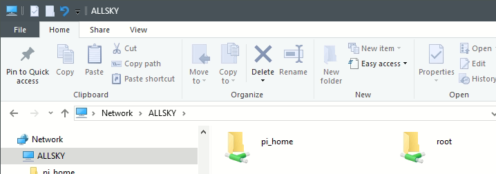

How do I copy files to/from the Pi?
If the file is a text file and it fits on one screen, for instance, in an editor, you can simply highlight the text and copy to the Pi's clipboard, then paste it into a file on your PC or Mac.
If you have a large file or a binary file, you can mount the Pi's filesystem onto your PC or Mac by using SAMBA.
Copy the lines below to a file on your Pi named installSamba.sh
(this is easiest if you are viewing this page in a browser on your Pi).
#!/bin/bash
# Install SAMBA to enable network access to another device.
# Base idea from StackExchange ( https://bit.ly/3Qqzbnp )
if [[ -z ${LOGNAME} ]]; then
echo "Unknown LOGNAME; cannot continue;" >&2
exit 1
fi
source "${ALLSKY_HOME}/variables.sh" || exit 1
CAP="${LOGNAME:0:1}"
CAP="${CAP^^}${LOGNAME:1}"
SHARE_NAME="${LOGNAME}_home"
echo -e "${YELLOW}"
echo "*************"
echo "This script will install SAMBA which lets remote devices mount your Pi as a network drive."
echo "The '${HOME}' directory on the Pi will appear as '${SHARE_NAME}' on remote devices."
echo "You can then copy files to and from the Pi as you would from any other drive."
echo
echo -n "Press any key to continue: "; read x
echo "${NC}"
# Install SAMBA
sudo apt install samba -y || exit 1
# Add the user to SAMBA and prompt for their SAMBA password.
echo -e "${YELLOW}"
echo "*************"
echo "You will be prompted for a SAMBA password which remote machines will use to"
echo "map to your Pi's drive."
echo "This is a different password than ${LOGNAME}'s password or the root password,"
echo "although you may elect to make them the same."
echo
echo "If this is your first time installing SAMBA and you are prompted for a current password,"
echo "press 'Enter'."
echo "*************"
echo "${NC}"
sudo smbpasswd -a ${LOGNAME} || exit 1
WORKGROUP="WORKGROUP"
CONFIG_FILE="/etc/samba/smb.conf"
echo -e "${GREEN}..... Configuring SAMBA.${NC}"
sudo mv -f ${CONFIG_FILE} ${CONFIG_FILE}.bak
sudo tee ${CONFIG_FILE} > /dev/null <<EOF
### Config File ###
[global]
workgroup = ${WORKGROUP}
server role = standalone server
obey pam restrictions = no
map to guest = never
client min protocol = SMB2
client max protocol = SMB3
vfs objects = catia fruit streams_xattr
fruit:metadata = stream
fruit:model = RackMac
fruit:posix_rename = yes
fruit:veto_appledouble = no
fruit:wipe_intentionally_left_blank_rfork = yes
fruit:delete_empty_adfiles = yes
security = user
encrypt passwords = yes
# Optional logging. Is very verbose.
# log file = /var/log/samba/log.%m
# max log size = 1000
# logging = file
# The directories you want accessible by other devices.
# Each one's name must be surrounded by [].
[${SHARE_NAME}]
comment = ${CAP} home directory
path = ${HOME}
browseable = yes
read only = no
create mask = 0664
directory mask = 0775
### end Config ###
EOF
echo -e "${GREEN}..... Restarting SAMBA.${NC}"
sudo /etc/init.d/smbd restart
echo -e "${YELLOW}"
echo "*************"
echo "You can now mount '${SHARE_NAME}' on your remote device using"
echo "workgroup '${WORKGROUP}' and login name '${LOGNAME}'."
echo "If you don't know how to do that, see your remote device's operating system documentation."
echo "*************"
echo -e "${NC}"
Now execute:
chmod 755 installSamba.sh ./installSamba.shand follow the prompts. On a PC you should then see something like this in Windows File Explorer:

Mount it as you would any other network drive. Remember to use the SAMBA password you entered during installation.After starting Allsky, all I get is "Allsky software is starting up"
Most likely Allsky is dropping all images for being overly dark or overly bright due to inappropriate settings.
Check the log to see what it says by running
tail -f /var/log/allsky.log in a terminal window.
If you are using manual exposure/gain try adjusting those values.
If you are using auto exposure/gain, the starting values are what you specified as the manual values, and it may take several exposures for the software to home in on the best exposure. While it's doing that, you'll see the "Allsky software is starting up" message. This is normal. If, however the message remains after several minutes follow the instructions here and submit the log file.
You can also temporarily set REMOVE_BAD_IMAGES to "false" in ~/allsky/config/config.sh to see what the incorrectly exposed images look like - this might give you an idea as to the problem.
Why is there is a long delay between pictures?
The time between when one picture ends and another starts is determined by these settings:
- Delay (daytime or nighttime).
- Max Auto-Exposure (daytime or nighttime), even if you are using manual exposure.
- Consistent Delays Between Images.
- If Consistent Delays Between Images is "Yes",
then the total delay is always:
Delay + Max Auto-Exposure. - If Consistent Delays Between Images is "No", then the total delay is simply the Delay.
How do I reduce wear on my SD card?
SDcards have a limited number of writes they can handle before they wear out. Although this is usually a very large number you may wish nonetheless to minimize writes to the SDcard. The bet way to do this is by making Allsky's allsky/tmp directory a memory-based filesystem, i.e., instead of residing on the SDcard it resides in RAM memory.
During Allsky installation you were prompted to create tmp as a memory-based filesystem. If you did that you can ignore this tip.Note the following:
- In order to do this you'll need enough free RAM memory, so this may not work well with systems with very limited memory, for example, 512 MB.
- The contents of the tmp directory will be erased every time you reboot your Pi. This should be ok since it's only used for temporary log files and to hold images as they come out of the camera, before they are stored in allsky/images/DATE.
It's simple to create a memory-based filesystem:
cd ~/allsky ./install.sh --function check_tmpIt's suggested you accept the defaults.
How do I focus my allsky camera?
Try get your camera at least roughly focused during the day. It'll be easier to see the focus ring on your lens, and exposure duration will be much shorter so you'll get more instant feedback.
Manual-focus cameras
Turn on the Focus Mode setting in the WebUI's Allsky Settings page.
- If you are using the module overlay method, in the Overlay Editor add the ${FOCUS} variable to the image anywhere you want. Use a large font to make it easier to see.
- If you are using the legacy overlay method, enable the Show Focus Metric setting in the WebUI.
A focus number will appear on your images - the higher the number, the better the focus. The number can change depending on the brightness, so focus when the brightness isn't changing. Focusing when it's partly cloudy can give you a visual indication of the focus.
When done focusing, disable the Show Focus Metric setting since it's no longer needed.
Auto-focus cameras
Some cameras, such as the RPi Module 3 can automatically focus.The /var/log/allsky.log file is gone. How do I get it back?
- Try restarting the software:
sudo systemctl restart allsky. - If that doesn't help, restart the software that controls the log files:
sudo systemctl restart syslog. - If that doesn't help, reboot the Pi.
- If that doesn't help, wait until tomorrow - sometimes the log file mysteriously reappears after midnight. Note this is NOT an Allsky problem since it also happens with other services.
Pro-tip: install gh on your Pi so you can easily collaborate using Github Gists
Click here for the full details or download the latest release from here. Once you have the Command Line Interface (CLI) installed, you can easily upload a script you wrote with something like:
gh gist create -d "a tool to find alien spaceships" < my_awesome_allsky_script.pyor share logs using something like
journalctl --since 05:00 -u allsky | gh gist create gh gist create < log.txt